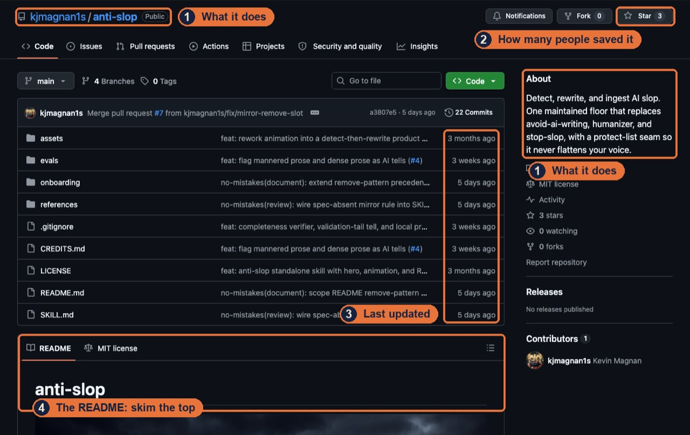

1. Why start from someone else’s work
Most people start with AI the same way. They open a blank chat, type what they want, and rebuild something another person already made and gave away for free. Look at the people getting the most out of these tools and you’ll see what they have in common. They start from other people’s work: a skill or plugin someone published, a repo someone shared, a setup someone posted on X. They grab it, bend it to fit their job, and move on. That’s the whole idea of this kit. Don’t start from zero.
Almost all of that work lives on GitHub, and you don’t need a coding background to use it. I came to AI after ten years in management consulting.
A quick word on three terms before we go further:
- A skill is a set of instructions, saved as a text file, that teaches an AI tool like Claude Code or Codex how to do one job well. Some skills also include small scripts or templates.
- A plugin is a bundle you install in one go. It can hold several skills plus extras, like commands you type with a slash or a connection to another app. If a skill is one recipe, a plugin is the cookbook.
- A repo (short for repository) is a project folder on GitHub. Most skills and plugins live in one.
2. GitHub without the fear
You barely need to read GitHub. I know it looks like a site built for programmers, because it was. You only need three things from it. It’s where people post the skills and tools they’ve built, and most of them are free. You find them by searching for the job you want done, or by following the right people. Section 4 shows you how to pick them. And once you find one, you don’t install it yourself. Copy the page’s link, paste it into Claude Code, and ask it to install the skill. (Plugins take two short commands you type yourself. Section 3 shows them.) Your agent reads the repo for you.

When you do land on a repo page, these are the only parts worth a glance:
- The name and one-line description at the top. This tells you what it does.
- The star count. A star is how people bookmark a repo on GitHub. A few thousand means a lot of people found it useful. A handful means it’s new or niche, which means it’s less tested.
- The last update, shown next to the file list. If nobody has touched it in a year, keep looking.
- The README, the page of text below the files. Skim the first screen for what it does and who it’s for. Skip the install instructions. Your agent reads those.
That’s it. You don’t need to understand the files, and you don’t need your own GitHub account to use what’s there.
3. Your first skill in about five minutes
When I tested it, Claude Code took just over a minute from pasting the link to having the skill installed. Give yourself five, so you have time to read what it tells you.
- Open Claude Code in the folder where you do your work.
- Paste this, with the link to the skill you want:
Install this skill so you can use it: <link> - Read what Claude Code tells you. It says where it put the skill and points out anything worth a second look before you use it.
- Type
/reload-skills. This command tells Claude Code to check again for skills added or changed since your session started, so the new one works without closing anything. - Try it. Ask for the job the skill does. If it doesn’t kick in, type a slash and the skill’s name, like
/frontend-slides.
Installing a plugin
Plugins install with two commands you type into Claude Code yourself. The first adds the plugin’s home on GitHub, and the second installs it. Here’s how I installed Impeccable:
/plugin marketplace add pbakaus/impeccable/plugin install impeccable@impeccable
The part after add is the repo’s address: the owner’s name, a slash, and the repo’s name. The part after install is the plugin’s name, then an @, then the name of its home. Then type /reload-plugins. This command switches on the plugin you just installed inside your current session, and everything in it shows up at once. Type /plugin any time to see what you have installed.
Once one skill or plugin works, you’re no longer starting from zero. Every one after it installs the same way.
4. How I find them
Where to look
- Ask your agent. Tell Claude Code the job you want done and ask it to search GitHub for you: “Find me a skill for reviewing contracts, and show me the three most popular.” It searches, reads the pages, and reports back.
- GitHub topics. Topics are tags people add to their repos. github.com/topics/claude-skills lists nearly 9,000 repos, and github.com/topics/agent-skills lists over 25,000. Sort by most stars.
- Awesome lists. An awesome list is a repo that’s a hand-picked list of links. Search GitHub for “awesome claude skills.” ComposioHQ/awesome-claude-skills has over 75,000 stars.
- The official shelves. Anthropic publishes its own skills at github.com/anthropics/skills. Claude Code also comes with an official plugin marketplace: type
/pluginand open the Discover tab. - Check the author’s other work. When a skill works for you, open its author’s GitHub profile and look at what else they’ve made. I found a whole set of skills that way after using one from Matt Pocock.
- Follow the trail. Most of what I use, I first saw in AI content: YouTube, TikTok, X, and podcasts. I watch and listen to a lot of it. When a creator mentions someone, or keeps talking with someone, I go look at that person too, and often find a new skill there. The next part shows how to pick who to follow.
Who to follow
Following someone means their posts show up in your feed. On X, LinkedIn, and GitHub, you click Follow on their profile page.
The people worth following work in your field and publish all the time. They post tips, share what they tried this week, and show their setups. People like that are usually the first to share a skill when they build one, and they share it on GitHub. So when someone in your field keeps teaching you useful things, find their GitHub profile and follow them there as well. What they build and star shows up on your GitHub home page.
Start with three or four people like that in your own field. They’ll find more for you than a hundred general AI accounts.
My weekly habit
Finding is half the work. The other half is saving what you find and deciding on it later. Here’s how I do that:
- I bookmark on X. When someone posts a tool worth a look, I save it.
- I star it on GitHub. My stars are my shortlist.
- I review the stars every Thursday. A skill I built pulls in the repos I starred that week, and I turn the best of them into a carousel for TikTok and Instagram. I’ve made 18 of them so far.
Save things when you see them, and decide on them once a week.
5. My picks
These are the skills, plugins, and tools I use most, sorted by what you want to do. Every one of them was built by somebody else except anti-slop, and every one is free to install. A few connect to paid services, which I note. The ones marked (plugin) install with the two commands from section 3.
Write
- anti-slop (mine). Finds and rewrites the phrases that make writing sound machine-made. It’s my most-used skill: 275 uses so far. github.com/kjmagnan1s/anti-slop
Make videos
- video-use. Edits talking-to-camera videos by conversation: cuts filler words and dead air, adds captions, and renders the final cut. github.com/browser-use/video-use
- HyperFrames (plugin). Turns web pages into rendered video, which is how I make the motion graphics in my videos. github.com/heygen-com/hyperframes
- Higgsfield (plugin). Connects your agent to Higgsfield’s image and video generators. The generation itself is a paid service. github.com/higgsfield-ai/skills
Design and build
- Impeccable (plugin). Critiques and polishes web design, and flags the parts that look like a template. github.com/pbakaus/impeccable
- frontend-slides. Builds animated slide decks as a web page, and can convert a PowerPoint file. github.com/zarazhangrui/frontend-slides
- here.now. Publishes a file or folder to a shareable web link in one step. github.com/heredotnow/skill
Research
- Agent-Reach. Lets your agent read X, Reddit, YouTube, GitHub, and more, so research doesn’t stop at a regular web search. github.com/Panniantong/Agent-Reach
Automate
- gogcli. Gives your agent Gmail, Calendar, Drive, and Docs from the command line. github.com/openclaw/gogcli
- Codex inside Claude Code (plugin). Hands a task or a review to OpenAI’s Codex without leaving Claude Code. I use it for a second opinion. github.com/openai/codex-plugin-cc
- Claude in Chrome. Lets Claude use your browser: open pages, click, and fill in forms. This one is a Chrome extension from Anthropic, so you install it from the Chrome Web Store, not GitHub.
6. Your expertise as a skill
Here’s where my list stops being useful to you. Every pick above was built by someone who knew their own work well: an editor, a designer, a researcher. None of them knows yours. If you’re a small business owner, a technology leader, an office administrator, a paralegal, or an accountant, you carry a procedure in your head that no public skill has: the order you check things in, the mistakes you catch that a new hire misses, what a good one looks like. A skill is that procedure written down so an AI can follow it. You don’t need to code to write one, and you don’t need to put it on GitHub. It’s a text file on your computer. My most-used skill, anti-slop, started as three skills other people wrote. I merged them, then kept adding the tells I caught in my own writing.
Write your first one
- Pick one task you do often and do well. Small and specific beats broad. “Review a vendor invoice before we pay it” is a skill. “Do accounting” isn’t.
- Fill in the template below. Write it the way you’d explain the task to a sharp new hire on their first day.
- Save it as a file named
SKILL.mdinside its own folder, in~/.claude/skills/. For example:~/.claude/skills/invoice-review/SKILL.md. Then type/reload-skillsso Claude Code picks it up right away. - Run it on a real case. Watch where it goes wrong, fix that line in the file, and run it again.
You can also skip the typing. Describe the task to Claude Code out loud, the way you’d walk someone through it, and ask it to write the skill for you. Then read what it wrote and fix what it got wrong. You’re the expert. It’s the typist.
The template
---
name: invoice-review
description: Use when reviewing a vendor invoice before it gets paid.
---
# Invoice review
## When to use this
The situations where this skill applies, and the ones where it doesn't.
## What good looks like
Describe a finished job you'd be proud of. Paste a real example if you have one.
## The steps, in the order I do them
1.
2.
3.
## The mistakes I always catch
What a new hire misses. This section is where your expertise lives.
## What to hand back
The format you want the result in: a checklist, a short email, a table.The description line matters most. Claude Code reads it to decide when to use the skill, so name the situation where you’d use it.
Two of mine, built on other people’s tools
- Blotato. Blotato is a service that posts to social media. My skill on top of it publishes a finished video to TikTok and Instagram, with a cover frame I pick. The skill is my process for using it.
- repo-carousel. Every week it pulls the GitHub repos I starred that week, drafts the copy, and renders the carousel slides. It’s the habit from section 4, written down so most of it runs without me. I still review the copy and post by hand.
Neither one is public. Keep your skills on your own machine until you want to share them. You can post to GitHub later, if you want to.
When you have a few skills for the same kind of work, you can bundle them into a plugin, so a teammate installs all of them with two commands. That’s a later step too. I’ve published one myself, karnak, which decides how hard Claude should think before each step. Start with one skill.
Bonus: my website-building library
Over 80 resources I’ve collected for building websites: motion and transitions, components, icons and logos, backgrounds, sound, design systems, and launch checklists. It’s the list I check before building any page.
See the library: kevinjmagnan.com/library
Start from someone else’s work. Then write down what only you know.
Kevin